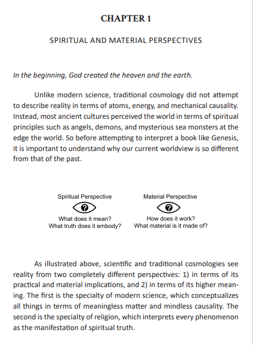

Reading
MATTHIEU PAGEAU - THE LANGUAGE OF CREATION
Justification
Matthieu Pageau's "The Language of Creation" is the one and only book I have saved on my laptop (partially because I illegally downloaded it). And with good reason. Among intellectual literature, it is perhaps the most clear and properly communicative yet profound scholar work. It focuses on (primarily Christian) spiritual worldview from the bronze age, through the medieval era and up to modern times, and gives a useful insight into not only the Bible, but also art and symbolism deriving from it and around it.
Reflection
While most people can understand simple sentences, it can often be hard to grasp complicated abstract concepts, even for native speakers. Perhaps in part thanks to Matthieu's high quality of writing, this book goes down like hot butter through my throat after a very regretful and unhealthy downing of a smorgasbord.

THE CHAOS
Wikipedia page
Justification
What can be said? The Chaos is a classic, and I do not feel like justifying it. But I will anyway, because that is my toll. It is a poem written to help practice pronounciation. I had originally encountered this poem through my teacher, Kateřina Tomková, but has remained in my periphery ever since.